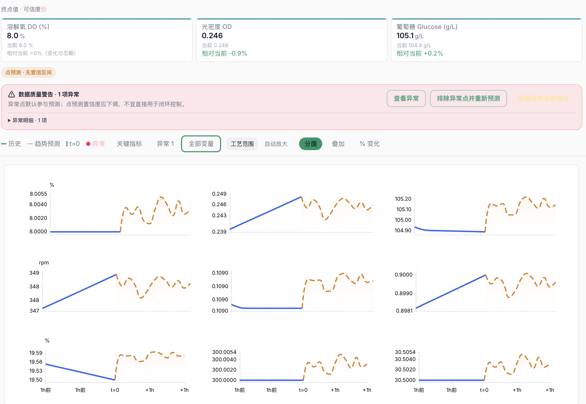

时序建模
基于历史趋势，滚动推演未来走势，覆盖发酵全流程关键指标。
Capabilities
基于发酵过程时序数据，一次性输出多个关键指标的未来走势。
基于历史趋势，滚动推演未来走势，覆盖发酵全流程关键指标。
光密度 OD、葡萄糖、溶解氧等多变量同时预测，直观对比。
上传历史数据即可跑，无需改造现有产线与采集系统。
Workflow
导出您的发酵过程历史数据。
AI 输出未来 1 小时关键指标走势。
留下需求，我们演示并在您的真实批次上接入。
Product
关键指标走势预测、异常预警、滚动更新，都在一个界面里完成。
